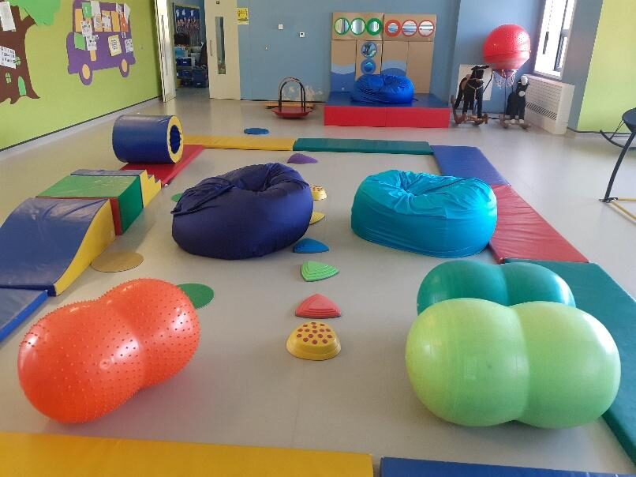

For schools and professionals in Cork
Trial a beanbag for two weeks
It is difficult to convey from a website photo how substantial and user-friendly these sensory products are. So schools and practices in Cork can take a beanbag, a lap pad or both for two weeks and find out properly — no obligation.
How the trial works
The idea came from a secondary school in 2025. Julie began trials in spring 2026, with that school and several more, and it has proved a very successful endeavour ever since.
Both teacher and student get to inspect and engage with the product in their own time, in their own space. After the two weeks, Julie calls back to hear how it went.
“I’d love you to try it with your students for two weeks — no obligation. If it works as well for you as it does for other practices, I’d ask two things: consider it for your own practice, and pass my details to any families who’d benefit at home.”

Calm, focus and regulation — in one product
The beanbag gives children deep-pressure input that helps with:
Regulation
Body regulation and calming during transitions or anxious moments.
Body awareness
Spatial awareness and proprioceptive feedback.
Focus
A tactile, engaging tool that keeps students settled and focused during sessions.
Hand-made in Cork since 2002 · CE approved · trusted by occupational therapists across Ireland
What schools and therapists say
“We’ve been using a bean bag and a selection of weighted blankets from [Sensory Beanbags] with our students over the past couple of months, and they’ve made a real difference. The quality is excellent — everything feels well-made and built to last, which is so important in a busy classroom. We chose a fleece bean bag, and it’s incredibly comfortable. It’s become a go-to spot for one student in particular when they need some time to regulate. The weighted blankets have also been a great addition — they come in a lovely range of sizes and textures, and our students really enjoyed being able to choose their favourites when Julie visited. Overall, I’d highly recommend [Sensory Beanbags]. The items we purchased have quickly become a valued and well-used part of our ASD classroom resources.”
“From an occupational therapist perspective, Sensory Beanbags is the place to buy your sensory beanbags and weighted products, as they come with high standards and an in-depth understanding of how to meet sensory needs.”
Quotes, visits and paying
- Discounts are available when you purchase more than one product.
- Julie visits schools and practices around Cork with products to see and try.
- ETB registered. Pay by invoice, Revolut or bank transfer; cash on delivery in the Cork city area.
- Delivery anywhere in Ireland — free in Cork city, €10–15 by courier or An Post elsewhere, depending on weight.
Talk to Julie
Every beanbag is made to order, so there is always someone to ask before you buy. Questions about sizes, fabrics, weights or delivery are all welcome.
- 087 131 9619Phone or text
- marihannon@gmail.comUsually answered within a day or two
- County Cork, IrelandEverything is made here by hand